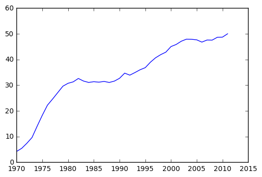
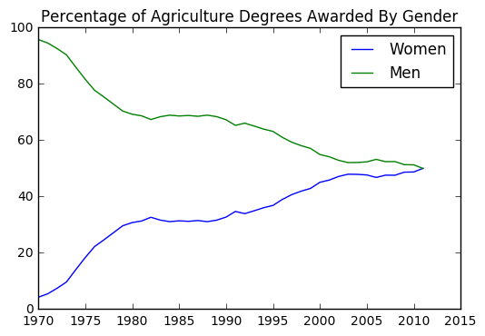
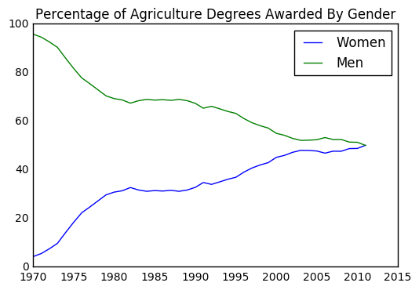
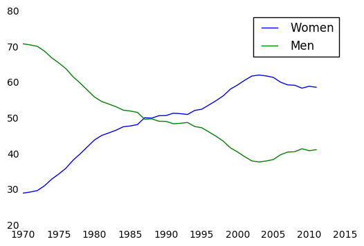
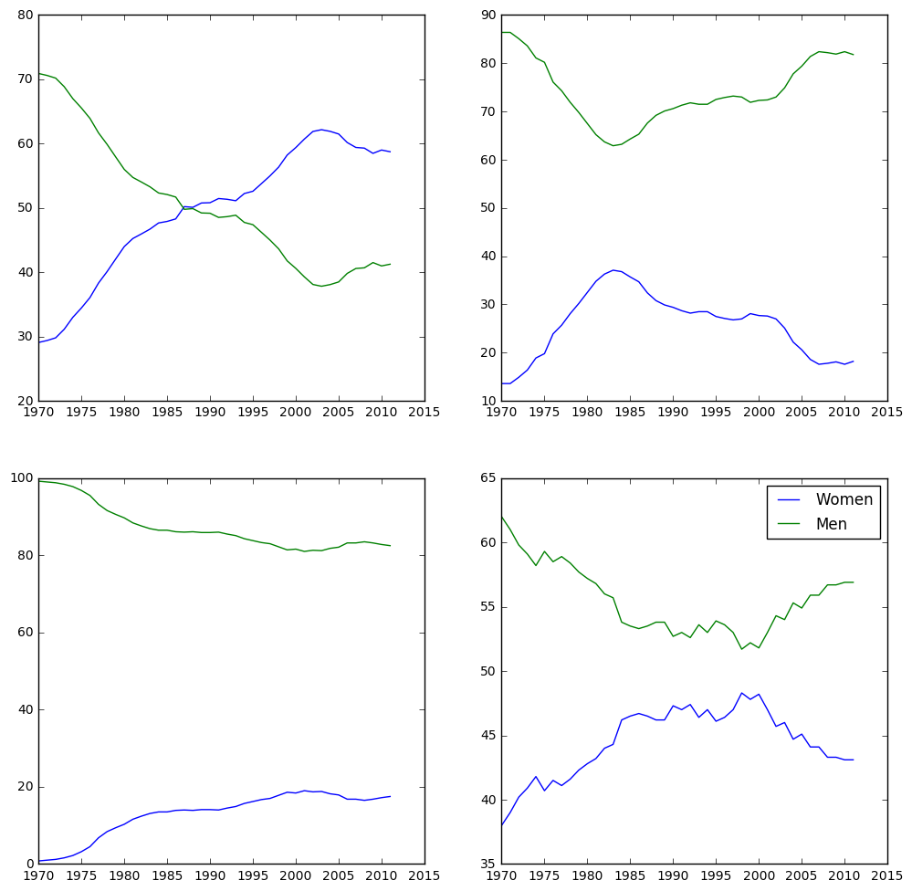
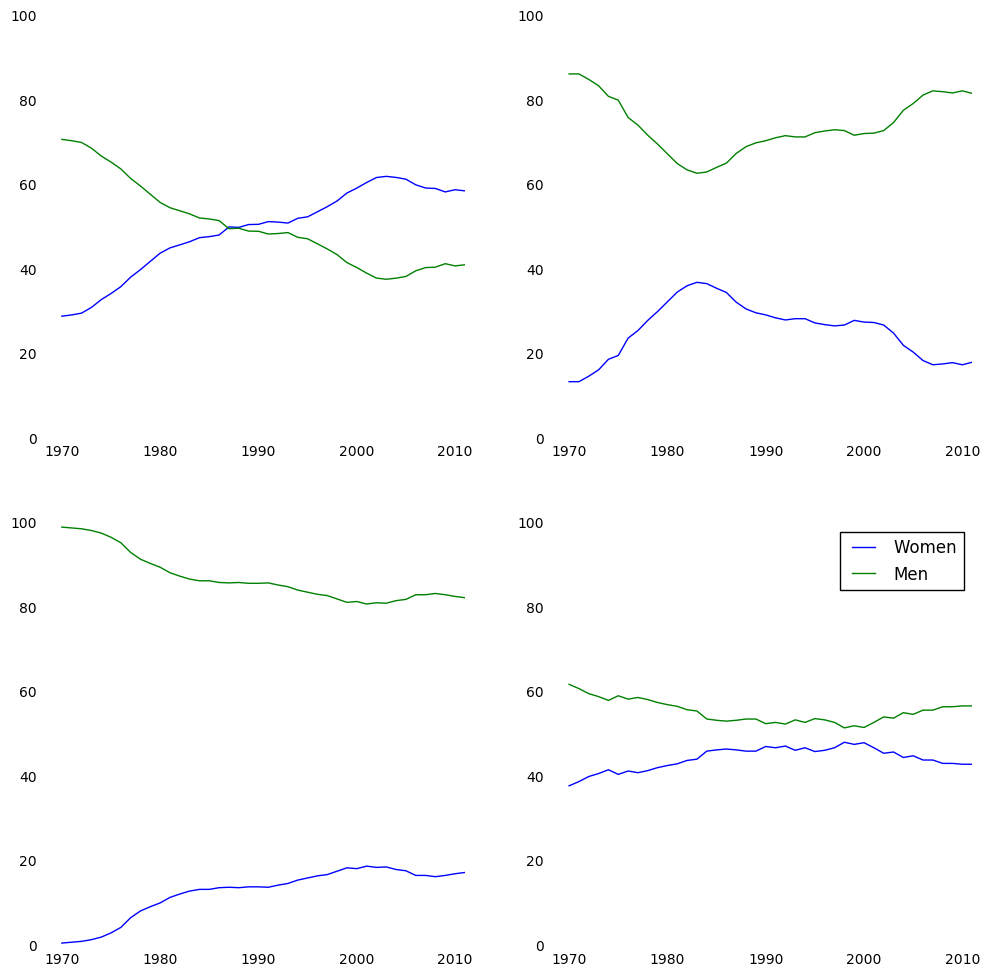

matplot的使用之四:细节设置(1/2)
import pandas as pd
import matplotlib.pyplot as plt
women_degrees = pd.read_csv('percent-bachelors-degrees-women-usa.csv')
plt.plot(women_degrees['Year'], women_degrees['Agriculture'])
plt.show()

# 100 - women_degrees means men
plt.plot(women_degrees['Year'], women_degrees['Agriculture'], c='blue',label='Women')
plt.plot(women_degrees['Year'], 100-women_degrees['Agriculture'], c='green',label='Men')
plt.legend(loc='upper right')
plt.title('Percentage of Agriculture Degrees Awarded By Gender')
plt.show()

# 100 - women_degrees means men
# 去掉坐标轴上面的刻度
plt.plot(women_degrees['Year'], women_degrees['Agriculture'], c='blue',label='Women')
plt.plot(women_degrees['Year'], 100-women_degrees['Agriculture'], c='green',label='Men')
plt.legend(loc='upper right')
plt.tick_params(bottom='off', top='off', left='off', right='off')
plt.title('Percentage of Agriculture Degrees Awarded By Gender')
plt.show()

fig, ax = plt.subplots()
ax.plot(women_degrees['Year'], women_degrees['Biology'], c='blue', label='Women')
ax.plot(women_degrees['Year'], 100-women_degrees['Biology'], c='green', label='Men')
ax.tick_params(bottom="off", top="off", left="off", right="off")
# 去掉四周方框
for key,spine in ax.spines.items():
spine.set_visible(False)
ax.legend(loc='upper right')
plt.show()

# 生成四个图
major_cats = ['Biology', 'Computer Science', 'Engineering', 'Math and Statistics']
fig = plt.figure(figsize=(12,12))
for sp in range(0,4):
ax = fig.add_subplot(2, 2, sp+1)
ax.plot(women_degrees['Year'], women_degrees[major_cats[sp]], c='blue', label='Women')
ax.plot(women_degrees['Year'], 100-women_degrees[major_cats[sp]], c='green', label='Men')
plt.legend(loc='upper right')
plt.show()
major_cats = ['Biology', 'Computer Science', 'Engineering', 'Math and Statistics']
fig = plt.figure(figsize=(12,12))
# 四个没有边框的图
for sp in range(0,4):
ax = fig.add_subplot(2, 2, sp+1)
ax.plot(women_degrees['Year'], women_degrees[major_cats[sp]], c='blue', label='Women')
ax.plot(women_degrees['Year'], 100-women_degrees[major_cats[sp]], c='green', label='Men')
ax.tick_params(bottom="off", top="off", left="off", right="off")
for key,spine in ax.spines.items():
spine.set_visible(False)
ax.set_xlim(1968, 2011)
ax.set_ylim(0, 100)
plt.legend(loc='upper right')
plt.show()

